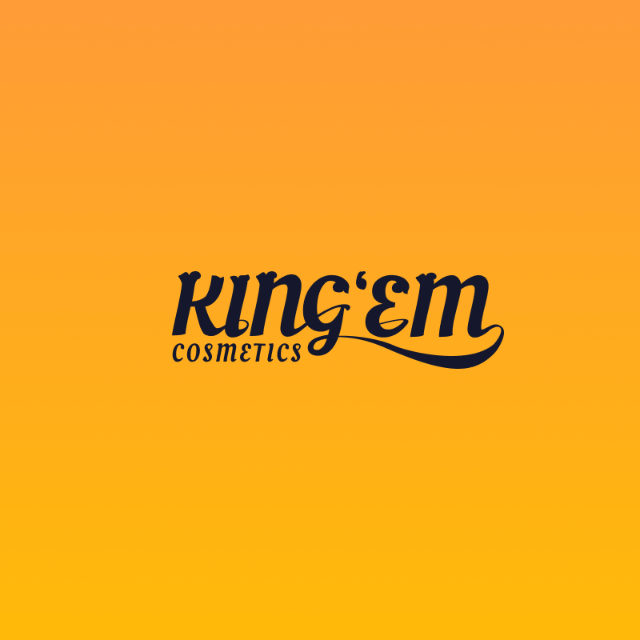
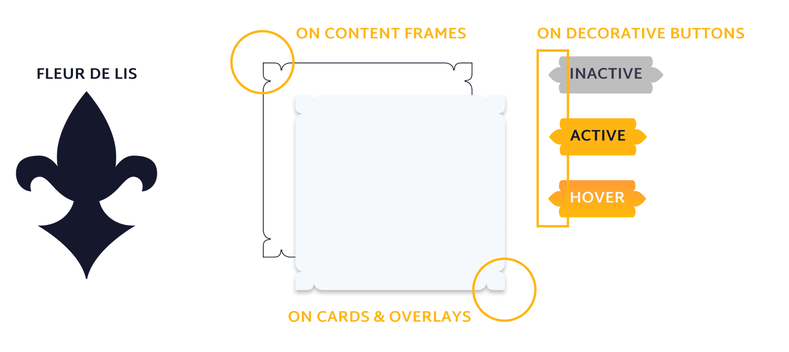
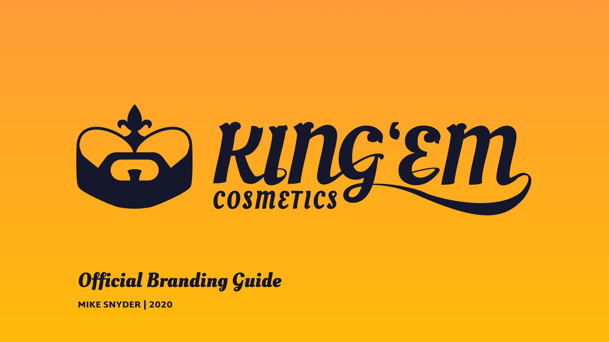

I've met so many amazing people as a drag queen, many of them drag kings or masculine identifying people looking to use makeup to help them feel more comfortable, confident, and decisively masculine in the moment.
The beauty industry is very restricted to female marketed products. This brand would help create space for masculine identities and help dismantle the gender barrier as the brand evolves with the market. Let's get into the branding!
To create the KING'EM logo, I took inspiration from symbols of royalty and masculinity. The logo combines the shapes of a well-groomed beard with a crown sporting the fleur de lis.
The logotype for KING'EM features a custom variant of Oleo Script with ornate serifs and elegant swooshing ligatures to tie the brandmark and fleur de lis motif to the name.
I incorporate fleur de lis inspired flourishes throughout the design system to create a unified camp throughout the UI.
Creating this website was like building a castle for all the kings to gather. I have a much greater respect for how much effort goes into a clean e-commerce interface. Explore the website on desktop or mobile thanks to these Figma prototypes!
Want a closer look at the KING'EM branding? You can check out the pdf of the detailed branding guide here!
 Open PDF